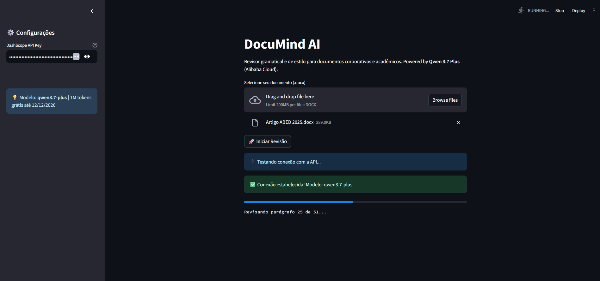

Voltar aos resultados
Revisão de apostilas longas em minutos
Uma aplicação web que revisa gramática e estilo de documentos Word parágrafo por parágrafo, preservando a formatação original.
3 dias10 minTempo de revisão de uma apostila com mais de 100 páginas, sem custo de revisão externa

O problema
Apostilas com mais de 100 páginas levavam dias para ser revisadas e dependiam de revisão externa. Colar o texto num chat de IA resolvia a gramática, mas destruía a formatação do documento.
A solução
O DocuMind lê o arquivo .docx, envia cada parágrafo para revisão e devolve o texto corrigido no mesmo lugar, mantendo negritos, itálicos, títulos e listas. A interface mostra o progresso em tempo real e entrega o documento pronto para download.
Desafios resolvidos
- Formatação preservada: o texto é trocado dentro da estrutura do Word, sem perder estilos.
- Documentos longos: o processamento parágrafo a parágrafo evita estourar o limite do modelo e permite tratar erros bloco a bloco.
- Instruções precisas: o prompt pede só o texto revisado e proíbe mudanças na estrutura.
Trecho do código
def revisar_texto(client, texto):
prompt = f"""Você é um revisor profissional de textos corporativos e acadêmicos.
Revise o texto abaixo, corrigindo gramática e ortografia e melhorando a clareza.
REGRAS:
1. Responda APENAS com o texto revisado
2. Mantenha a estrutura de parágrafos do original
3. Preserve a formatação implícita (títulos, listas)
TEXTO ORIGINAL:
---
{texto}
---"""
resposta = client.chat.completions.create(
model="qwen3.7-plus",
messages=[{"role": "user", "content": prompt}],
temperature=0.3,
)
return resposta.choices[0].message.content.strip()